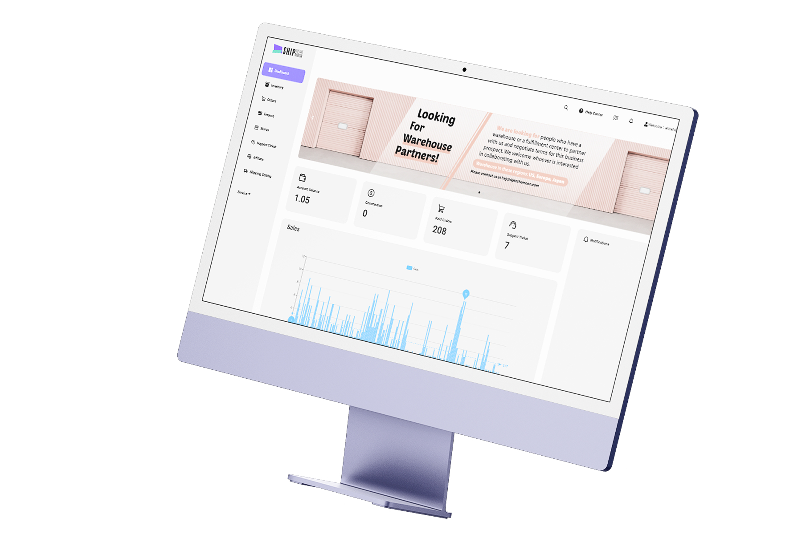
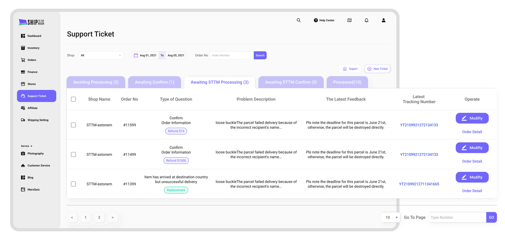
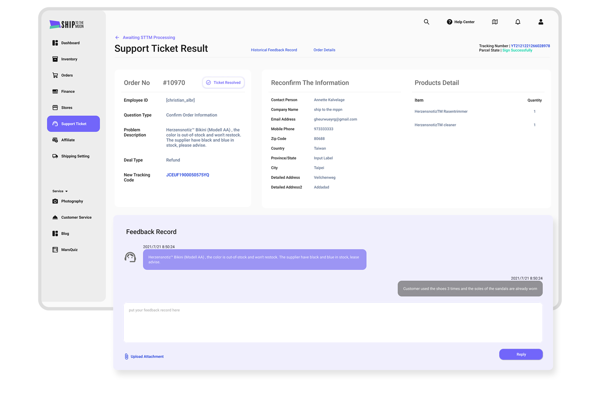
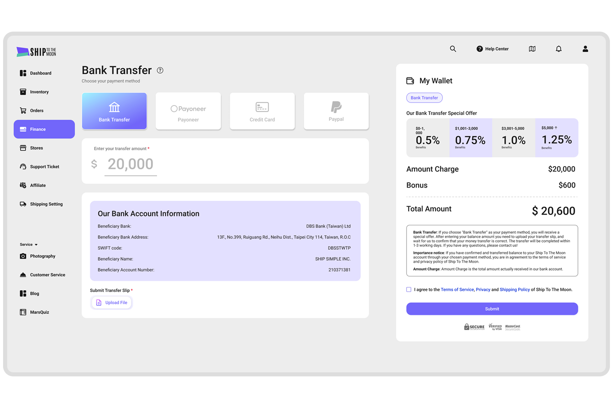
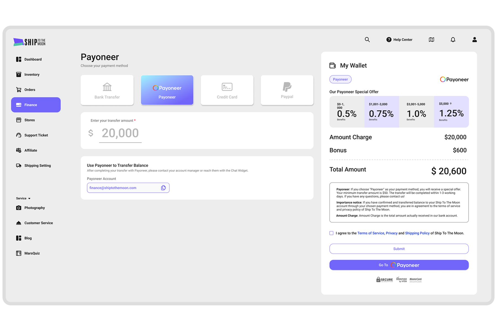
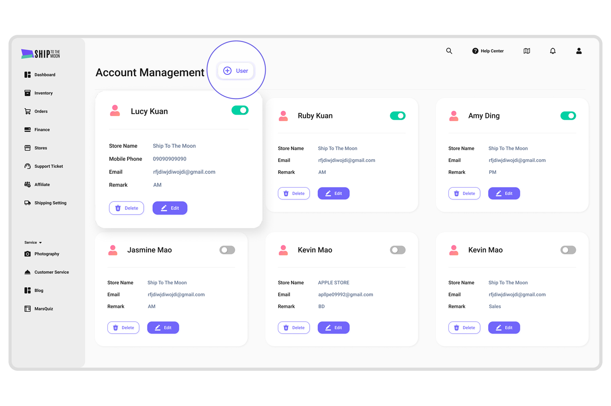

概述 Overview
STTM - 跨境電商代發貨平台
#B2B #SaaS #Software UI Design
STTM（Ship To The Moon）是一站式 Dropshipping 平台，專為電商與品牌賣家打造。透過無縫串接多方銷售渠道與端對端自動化流程，系統全面接管「採購至出貨」的完整供應鏈，讓客戶能將核心資源專注於品牌營運與選品策略。
Team | Ship To The Moon
Role | UI/UX Designer
Collaborators | UI/UX Designer(2)、PM(1)、FE(1)、BE(1)、CS(1)、BD(1)

Task
- 建構具擴充性的設計系統
針對 B2B Dropshipping（一件代發）業務中「跨平台整合」與「高密度數據」的特性，盤點並重構既有介面。制定標準化且嚴謹的 UI 元件庫，以確保未來供應鏈模組擴充時，能維持高度的視覺與互動一致性。 - 降低營運與學習成本
解決 Dropshipping 模式下繁雜的零庫存出貨流程。針對複雜的 SaaS 後台架構，透過直覺的互動設計優化核心工作流（如：多商店串接、自動化儲值設定），大幅降低用戶處理跨境電商業務時的認知負荷與操作錯誤率。
Solution
- 建立高信任感的視覺語彙
提取品牌核心「紫色」結合俐落的介面風格，建立符合 B2B 商業調性與高信任感的視覺識別，同時提升長時間處理數據的視覺舒適度。 - 強化資訊層級與系統化 UI
重新定義元件規範並導入系統化圖示，強化高密度數據表單中的資訊架構，加速管理者掃視關鍵數據與決策的速度。 - 高頻任務的工作流優化
在既有開發框架的限制下，重新佈局「訂單管理」與「財務模組」等高頻操作介面。透過減少跳轉與集中操作選項，具體提升企業用戶的任務完成效率。
資訊架構 Information Architecture

Style Guide
Color Palette
以品牌紫色（#6C54A7）為主色調，搭配亮紫（#7166F9）、粉紫（#E17CFD）作為層次延伸，引入水藍色（#4CD7F6）作為功能性輔助色；搭配 5 組漸層，整體呈現科技感與高端形象。
Typography
字型採用 Roboto，以 Medium 與 Regular 兩種字重構成層次系統：H1（36px）至 Button（14px），確保在資訊密度高的後台介面中維持清晰的視覺層級。


UI Design

Dashboard
資訊分層呈現，警示提醒不錯過
- 資訊層級優化
將使用者登入後最關心的核心營運指標（帳戶餘額、已付款訂單、分潤、待處理工單）置於首屏視覺焦點。打造直覺的視覺層級，幫助用戶快速判讀數據，提升管理效率。 - 非干擾性的防呆提醒
將通知中心獨立收攏於右側面板。確保關鍵警示（例如：餘額不足導致自動化出貨處理中斷）能第一時間抓住眼球，但又不會阻斷主畫面的數據閱讀與操作動線。 - 高效佈達管道
頂部橫幅區塊，作為高曝光度的溝通版位，用於引導新功能或重要公告，有效降低客服詢問成本。
Support Ticket
客服工單服務負責處理使用者關於收貨與訂單的任何問題。客服工單包含 5 種狀態，分別為：等待 STTM 確認、等待 STTM 處理、等待處理、等待確認以及已處理。
Select the order in question
Create new support
STTM receives and responds
Send a support ticket to users
Receive and respond to the ticket


動態表單設計，降低客服溝通成本
- 精細化的問題分類
系統定義了 12 種用戶提問情境與 6 種官方通知類型，建立清晰且全面的客服架構。 - 動態表單設計
系統會根據用戶選擇的問題類型，動態顯示對應的必填欄位，引導用戶在建立工單的第一時間就提供完整且精確的資訊，大幅減少後續客服人員來回確認的溝通成本，有效加快問題解決的速度。 - 清楚的資訊脈絡與自動化進度追蹤
工單內自動帶入關聯訂單內容與當前狀態，透過專屬狀態欄位明確區分每張工單的處理進度，讓問題排解與後續溝通皆透過工單內的對話視窗進行，打造順暢且單一的問題解決體驗。


清楚的資訊脈絡
- 訂單脈絡整合
工單內會自動帶入並清楚載明關聯的訂單內容與當前狀態。直接提供完整的背景資訊，省去用戶與客服在不同頁面間來回比對的時間，加速問題診斷。 - 直覺的進度視覺化
透過專屬的狀態欄位，明確區分並呈現每張工單的內容與處理進度。提升追蹤透明度，讓用戶能快速掌握問題目前處於哪一個處理階段，有效降低等待的焦慮感。 - 集中式訊息處理
所有的問題排解與後續溝通，皆透過工單內的對話視窗進行。將歷史對話紀錄集中管理，確保溝通脈絡不中斷，打造順暢且單一的問題解決體驗。
自動化進度追蹤
- 系統主動通報
系統會針對缺貨、訂單資訊有誤等 6 大預設核心情境，主動向用戶建立並發送工單。將客服模式由被動等待轉為主動介入，幫助用戶在影響最終消費者前，及早發現並排除訂單異常。 - 一站式問題解決
針對上述異常狀況，STTM 團隊會透過工單接手後續的排解作業並提供完整支援。打造閉合式的服務迴圈，大幅減輕商家在面對複雜出貨問題時的營運壓力與溝通成本。


Stores
一鍵串接平台，掌控多店舖狀態
- 主流平台無縫串接
支援 Shopify 與 WooCommerce 等主流電商平台的直接連線，針對多數用戶提供零阻力的初始設定體驗，大幅降低技術門檻與上線時間。 - 客製化串接引導
針對非主流平台提供「其他商店」選項，提交後由專屬客戶經理進行內部審核與系統對接，妥善處理特殊技術規格需求，確保非標準化串接過程的安全與完整性。 - 直覺的店舖狀態控管
用戶可透過直覺的開關元件，一鍵決定是否啟用特定店鋪，賦予商家對各銷售管道的即時掌控權，不僅簡化多店舖的管理流程，也能有效避免非預期的訂單同步狀況。

Finance
整合多元支付，帳務透明零阻力
- 透明的交易紀錄
系統集中展示「儲值紀錄」與「支出紀錄」，提供清晰的帳務明細，幫助商家一目了然地追蹤現金流與核對出貨成本，藉由高度的財務透明度建立系統信任感，並降低對帳的作業成本。 - 零阻力的全球支付
系統支援 Payoneer、信用卡、PayPal 與銀行轉帳等 4 種主流支付方式，滿足不同國家商家的多元金流習慣，打造零阻力的充值體驗，確保整體供應鏈的運作不會因為支付瓶頸而發生中斷。




Orders
狀態頁籤分類，集中處理訂單任務
- 直覺的狀態導覽
訂單管理的列表透過頁籤（Tab）清楚區分訂單的不同狀態，將繁雜的數據以直覺的方式分類呈現，大幅降低用戶尋找特定訂單的搜尋成本與時間。 - 行動導向的數據表格
將訂單明細、財務結構與出貨追蹤整合至單一視圖，並結合情境化的快捷操作按鈕，讓用戶能在檢視數據的脈絡下直接執行關鍵任務，減少頁面跳轉並提升營運速度。 - 全方位的任務自動化與批次處理
於主要訂單列表同步整合「自動化出貨處理」快捷開關與「全局操作（Action）」選單。除了能透過無間斷機制推動自動化出貨，用戶也能針對單一或多筆訂單直接批次執行指令。透過雙管齊下的設計減少頁面跳轉，大幅降低商家在擴張規模時的重複性手動操作。
Account Management
集中權限管理，安全分工更高效
- 精細的權限配置
提供集中式介面，讓管理者能輕鬆為不同子帳號定義並指派特定的存取權限，賦能商家實施安全的權限分級機制，確保團隊成員僅能接觸與其業務相關的系統功能，同時大幅降低未授權操作的營運風險。 - 統一的管理中心
將所有子帳號的建立、監控與權限修改整合於單一視圖中進行，有效降低商家團隊擴張時的行政管理成本，提供流暢的使用體驗，讓企業主能高效分配團隊工作負載，並始終保持最高層級的系統掌控力。

Settings
集中偏好設定，打造標準化自動流程
- 自動化出貨處理（Auto Fulfillment）
提供專屬介面以配置出貨相關規則，賦能商家自動化處理重複性的訂單作業，大幅降低手動工作量並加速整體出貨週期。 - 預設物流最佳化
允許用戶預先設定常用的物流與配送偏好，透過將預設參數自動套用於後續訂單，有效降低使用者的認知負荷與人為操作錯誤，建立標準化且高效的作業流程。 - 集中式偏好管理
用戶可於單一介面集中管理基本帳號資訊與信用卡等支付設定，透過整合帳戶管理功能來降低介面導覽的阻力，確保用戶能直覺、快速地更新關鍵營運資料。

Takeaway
系統化設計與擴充性
處理 B2B 供應鏈系統的高密度資訊時，不能僅靠單一頁面的短視角思考。透過建立嚴謹的 UI 元件庫與設計規範，不僅確保了跨模組的視覺一致性，更為未來系統擴充（如：新增銷售渠道或進階數據報表）打下具備高度「擴充性」與「可預期性」的底層架構。
在技術約束下最大化設計價值
在既有開發框架的限制下，設計不能流於理想。我學會精準評估設計決策的實作成本與影響力，將資源集中優化「訂單狀態管理」與「自動化出貨處理」等高頻核心流程。在技術可行性與使用者體驗之間取得平衡，交付出最具商業價值的解決方案。